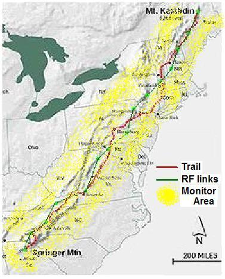
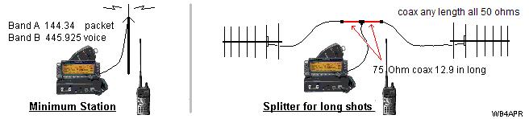

For all the news, Subscribe to the AT-Golden-Packet email reflector.
Year-by-year Event Summaries:
2020,
2019,
2018,
2017,
2016,
2015 used voice relay at 10,
2014 1st 100%,
2013,
2010,
(map),
2009.
2022 Plans: The date is 16 July 2022 and with the last 3 years successes at 9600 baud,
We will
begin at 9600 baud and with the higher beacon rate from the end stations to quicken link
confirmation by a factor of ten over previoius years. This year we are inviting someone to
man up Stone Mountain outside of Atlanta to extend the link further south.
Long-term, we still want to continue our quest for a permanent
220 9600 baud backbone. This year we are reaching out to
other packet networks along the Appalachian states to join existing efforts. Each node will have a 1200 baud
local user access. Please check the web page for the new ideas.
Here is the band plan.
See the Beacon-rate Plan for 2020.
20 July 2019 Success! See 2019 report above, but generally it was very successful with
Springer seeing Katahdyn, but Katahydn not getting the SPringer Packet though he got all others.
9600 baud was successful in minutes of switching over. That and lessons learned suggest
a much more exciting plan for 2020 (see above).
2020 Sign Up sheet.
2019 Sign Up sheet.
21 July 2018 SUCCESS!: Successful Links from Georgia to Maine (#1 to #13 via packet and then voice to #14 which had packet to #15 and into Canada, Mt StJoseph). Links began working when an antenna was relocated at AOMTN-5 and a coax was replaced at SAMSPT-10. The DIGI at MTWASH-13 died, so voice was used as a link. Here are the individual reports and comments:, starting with the Shackman's overall Summary and station manning.
Operations and Planning: Be sure to review the checklist!
SIGN UP: . . . . . . . Station manning
FREQUENCY:. . . 144.XX MHz, baud was 1200 this year. Voice is 445.925 MHz.
SCHEDULE:. . . . Ready to Operate at 1100. QRT by 1500 EDT as needed
COMMS: . . . . . . . communicate what you hear via updates to your STATUS text, generally, not messages
MESSAGES: . . . . Do not sent msgs (they require acks). Send BLN#'s only if needed to all
ANSRVR: . . . . . . .Logon to ANSRVR with "CQ AT ..." at start of message to get bulletins on 144.39 with 2nd radio
OTHER IDEAS: . Laser pointers to nearby peaks, or SSTV if you have one
TRENDING: . . . . tbd
CANADIAN: . . . . tbd
RF Path Analysis: John Huggins has developed this very detailed RF path analysis for each link. Click on the link on the map and see the margins.
The GOLDEN PACKET Event is the 3rd Saturday in July: For the last 30 years, Packet Radio just ain't got no respect at the national Field Day events, so we do our own outdoors VHF packet radio field event! Also, that weekend is often the CQ Worldwide VHF contest putting lots of Hams on the mountain tops.. as well as Scouting's Operation On-Target events. Most of Scouting's Operation On-Target efforts are out west. But no reason we cannot use APRS along national mountain chains including the Pacific Coast Trail above left. Or even the Continental Divide, or New Orleans to Chicago, or Texas to the Dekato's or Lewis and Clark's National trail. Utah and Idaho are big players in the ON-TARGET exercise. We need to get enough HamRadio internet-junkies out of their shacks.
To volunteer as a team leader for one of the other trails or Mountains and to get involved in the annual preparations, contact WB4APR at amsat dot org and join the YAHOO Group above.
Goals: Our APRS Golden Packet event consists of APRS individuals on very high and widely separate peaks from Georgia to Maine or San Diego to Seattle or New Mexico to Montanna to attempt to relay text messages from hikers using hand-held radios the 2000 mile length of the Appalachain, Pacific Crest, Continental Divide or other long National mountain trails. Of course, this is to be a no impact Leave-No-Trace communications test of a few individuals at each relay point to support possible other hikers equipped with APRS ham radios along the trail. APRS normally does not do long haul RF, due to the omni-directional flooding of packets which causes QRM. But for LINEAR trails, there are NO dupes to worry about, and long haul along a trail is a great demo of emergency point-to-point communications.
East Coast Event: This particular page is for the Appalachian Mountains event. As before, we hope that other groups along other long linear trails in the USA will get involved in their areas such as the
AT Trail EMAIL Group! Please join the AT-Golden-Packet Yahoo group above to stay informed with the planning and real-time comms for Ham Radio activities on the AT. For the Pacific and Western ON-Target Groups , see the PCT web page (though they have still not organized an event).
2016 Success with 9600 baud (16 July 2016): Despite the hornet stings, blownout tire, abandoned vehicle, forgotten date, blown radio, hot weather, and old Age, the Annual Appalachian Trail Golden Packet Event was mostly a success and it was the first time we switched to 9600 baud and found performance unaffected by the data speed. Intermod and interference on mountain tops remains a problem at some sites, and LOTS of details will be filled in by folloup reports on this page.
The link was broken at MtWash-13 (wrong date) leaving 14 and 15 isolated and at Clingmans-2 (blown-out radio) leaving Springer-1 isolated. Until SAMSPT-10 came on line, a new location, SLIDE-10 at twice the altitude (4100') provided links direct to EQUINOX-12 bypassing GREYLOCK-13 and its high levels of RFI. If this is viable, next year we can eliminate one hop in the chain! See the paths from SLIDE-10.
2016 First 9600 Baud Test: After the switch to 9600 baud at 1300, all stations reported success from North Carolina to PA and NY to Vermont with solid links. This opens up exciting possibilities for a permanent Eastcoast emergency packet backbone using level-4 (link-by-link) acknowledgement links. Some digipeating anomolies were confusing at CAMELBACK-9 and at COMERS-4 both using D700's (I think).
2015 A partial success: The event was 18 July 2015 and all stations were manned. But the brand new last minute volunteer for Sam's point was not yet packet capable so he was doing voice relay. Sufficient to get the "word" end to end, but a nice challenge then for next year (2016). Sam's point is a place that has to be hiked up several hundred feet and significant distance from the nearest parking lot. So making it small and lightweight is a challenge. An additional challenge is that the top of Sam's Point is very flat, meaning the link to the Northeast has very little HAAT in that direction. And being near commercial sites, the front end overload and intermod is severe.
 2014 SUCCESS 100% We did it! On 19 July 2014, this 6th annual attempt, the teams
(see manning list)
succeeded in end-to-end data packets from Georgia to Maine and back! Normally the annual date is the 3rd Saturday in July.
BUT due to the ARRL convention in the Northeast on that date, we shifted to Sunday, the 20th. The 19th was also the
CQ Worldwide VHF contest.
The APRS image
showing all the stations as captured by AL0I in NC is shown above right. After the Golden Packets were
successful at about 12:45, multiple messages were exchanged along the link. The detail reports from each
station are detalied on the individual mountain-top pages below. It will
take a while to clean up all the logs, but here is the
initial data log
captured at the midpoint. The file shows the source and final-heard station for each packet.
There are still many more log files to go over, so this is a work in progress. In addition,
a full report of the event will hopefully be published in QST and on this site as the reports come in. (ARRL declined as "it was not of general ham interest").
2014 SUCCESS 100% We did it! On 19 July 2014, this 6th annual attempt, the teams
(see manning list)
succeeded in end-to-end data packets from Georgia to Maine and back! Normally the annual date is the 3rd Saturday in July.
BUT due to the ARRL convention in the Northeast on that date, we shifted to Sunday, the 20th. The 19th was also the
CQ Worldwide VHF contest.
The APRS image
showing all the stations as captured by AL0I in NC is shown above right. After the Golden Packets were
successful at about 12:45, multiple messages were exchanged along the link. The detail reports from each
station are detalied on the individual mountain-top pages below. It will
take a while to clean up all the logs, but here is the
initial data log
captured at the midpoint. The file shows the source and final-heard station for each packet.
There are still many more log files to go over, so this is a work in progress. In addition,
a full report of the event will hopefully be published in QST and on this site as the reports come in. (ARRL declined as "it was not of general ham interest").
Operation On Target 2014: Bring a mirror. Although we have seen ZERO Boy Scout interest in the east for Operation On-Target, there is no reason we should not do this ourselves for them. We cannot hit peak-to-peak from GOlden Packet-to-golden packet station, but we can send our backup operators to surrouding peaks with a pocket mirror and simply start checking off all the peaks we CAN flash. Besides while you are sitting up there on your peak with nothing to do, waiting for all the rest of us to debug our sites, you may as well play with something!
Permanent sites? Given the success of the links, it might be a great idea to consider if a permanent site can be secured to make this link long term viable. In that case, we have established settings for the KPC3 TNC for best operation.
2013 Report: 20 July 2013 we had all 15 mountain peaks manned including Canadians on Mt Carrelton in New Brunswick. See the 2013 Reports. This year Mt Equinox replaced the NH Relay location. The Northeast had some bad weather with Tim getting drenched up on Katahdyn. Very quickly most of the Northeast could all see packets from Sams Point (10) to Katahdyn. And similarly down South, most stations could see each other except for Springer Mtn which was also impacted by rain and only got out one packet. Clingman's also had heavy rain. Camelback seemed to have a deaf receiver and never heard anything, breaking the chain. Maryland Mountain had the common deaf-receiver problem until the bands were swapped. AO Mountain seemed to have relayed very few packets too, revealing a problem with Receiving, since its packets were well received elsewhere.
Golden Packet and Operation ON-Target combined:. Each year the Golden Packet (APRS) event coincides with Scouting's OPERATION ON TARGET event. On-Target is an annual Ham / Scouting event using MIRRORS and HAM radio to communicate from mountain top to mountain top. Out west there are may dozens of active troops doing OT, but are just beginning to apply APRS to their event, and conversly, back east we do the APRS Golden Packet from the Mountain tops but no scouts playing with the mirrors. Lets try to help Eastern Scouts participate! See map.
2012 Some 94% Success! We got all mountain tops manned and had successful links from Alabama/Georgia to Masachussetts and from New Hempshire to Maine, but had one break in the chain in NH. A running log of each years activity is maintained on each of the 15 east coast mountain pages below as the info comes in. Click to see the Success Log. Eastern OT was a washout with overcast conditions everywhere. See 2012 graphic.
- - Operating Station. . . . . . Distance . . . . Other End
North Country Trail: In 2012, a team was going to activate the North Country Trail which runs through Michigan near White Cloud MI. Contact Jeff Sell K8OE or Mike McKay KD8DIB. Nothing heard back from them.
July 2010 Success! See the 2010 report.
July 2009 Report!: See the 2010 map and the 2009 Report).
 Other options and Linear Trails: Any other
long linear trail or mountain systems are welcome to participate such as the other 50,000 miles of national trails including some possible alternate paths
around the smokies and
through New Jersey.
Other options and Linear Trails: Any other
long linear trail or mountain systems are welcome to participate such as the other 50,000 miles of national trails including some possible alternate paths
around the smokies and
through New Jersey.
Bring a big Mirror. . . Tell scouts in your area to look for your flashes!
Op - ON-TARGET:... See present
On Target Site map.
RF LINKS: . . . . . . . . See
RF links for 2011
RF PATHS: . . . . . . . . See
RF analysis 2010 developed by John Huggins KX4O.
SITE DETAILS: . . . . See individual links below for each mountain
CHECKLIST: . . . . . . A comms coordination
checklist has been prepared.
D700 SETUP:. . . . . . . Settings for the
D700 digipeater. (needs PC on comm port)
D710 SETUP:. . . . . . . Settings for the
D710 digipeater. (can do from front panel)
D710 SETUP:. . . . . . . Settings for the
D710G digipeater. (can do from front panel)
D72 SETUP:. . . . . . . . Settings for the
TH-D72 HT digipeater. (can do from front panel)
VX8R SETUP:. . . . . . Setting the
Yaesu VX8R HT for On-Target (can't digipeat)
KPC3+ SETUP:. . . . . Settings for the
KPC3+ TNC (though not recommended).
PURPOSE: To find suitable, easy-to-reach sites which can be activated easily for potential backup emergency communications links across the USA. Amateur Radio has long been known to provide backup communications capability to public service agencies when needed. We will demonstrate our ability to communicate positions and messages along the length of the Appalachians or Pacific Mountains. Normally considered a 2000 mile hike, the Appalachian RF path is on the order of only 1200 miles and we hope to do this in only 14 hops. But additional Secondary Link Stations can also participate after the initial end-to-end tests are successful.
 OPERATING SCHEDULE: The Operation ON-TARGET event lasts from 1100 to 1400 LOCAL TIME and the CQ contest begins at 1800z (also 1400 EDT) so plan accordingly. For the Appalachian attempt, this means we have from 11 AM to 2 PM to get our packets working.
Here is a typical plan for the Appalachian Trail Golden Packet experiment is (other mountain chains are welcome to make their own schedules):
OPERATING SCHEDULE: The Operation ON-TARGET event lasts from 1100 to 1400 LOCAL TIME and the CQ contest begins at 1800z (also 1400 EDT) so plan accordingly. For the Appalachian attempt, this means we have from 11 AM to 2 PM to get our packets working.
Here is a typical plan for the Appalachian Trail Golden Packet experiment is (other mountain chains are welcome to make their own schedules):

Permissions!: This is not a park event! All park and trail authorities have special event application fees as much as $100 each, so it must be very clear to even the casual observer that this is NOT a park event . Although ham radio operators have traditionally used the term event to describe a convergence of activity on-the-air, this is not a park event. That is why we have a designated leader at each site to organize any participation without triggering park concern. For 2009 on the AT we luckally got the OK of the ATC Ranger but had to do a lot of explaining to insure the low impact of our plans. One team made the mistake of trying to get an event approval and nearly got denied access to the park. See our attempted letter to try to recover. There is no law or rule against operating an Amateur Radio mobile in a park, just follow all existing rules and remain no-impact and LEAVE-NO-TRACE: Stay well below the threshold that would trigger concern by any National, State, or local park authority and require copious red-tape.
VOLUNTEERS: We need volunteers for the planned peaks, plus any hikers that want to participate. Due to the criticality of each site to the whole event, it is a requirement to have backup people, and hardware. Also, an extra person to answer any questions of any bystanders. Since few scouts do On Target back east, once everythig is working, you can send yoru extra folks with pocket mirrors to other visible peaks and try to make some mirror contacts for the scouts. Details for each site are in the links below. Most day hikers are really into GPS, so why not APRS too? . To sign up as a volunteer, please contact wb4apr at amsat dot org or better, contact the individuals and team leaders for each team on each of the station web pages below. Due to the height of these stations, probably half of all east cost hams can monitor the test in the shaded yellow area shown at right.
APRS BACKGROUND: Although the Global APRS network provides full coverage along the Appalachians on the USA APRS channel of 144.39 MHz, it is linked globally via the internet and so it is impossible to demonstrate long distance communications on RF only. Plus it is RF saturated. Long haul RF communications is not possible nor encouraged due to congestion. . Therefore, this test will use a special uncongested frequency (144.34) just for this one day. Using amateur radio from mountian peaks is part of the peak2peak and SOTA projects, but to reduce the risk of RF congestion, this test is planned to avoid any VHF contest weekend.

SIGNIFICANT APRS CHARACTERISTICS FOR THIS TEST:
The reason for the radio specific requirement is due to the elimination of ALL potential set-up, configuration, and interfacing issues. See below.
STATION AND ROUTE PLANNING: For maximum range between hops, the best path for all trails from Georgia to Maine or San Diego to Seattle, ZIG/ZAGs as shown on the above maps rather than trying to shoot straight along the ridge. The height-above-average-terrain between the peaks along the trail ridge is significanly less than across valleys and drastically limits line of sight distances. . But zig/zagging from the peaks to adjacent mountain ranges and back across valleys, takes advantage of thousands of feet difference in heights above average terrain and allows us to make much greater distances in fewer hops.
GOOGLE EARTH DOES RAY TRACING! (sort of)... See the views created in The free Google Earth to see the RF paths and ground clearance. (anyone can do this). You can also get these views with APRS stations actually plotted on them on both The OpenAPRS and APRS.fi sites. . If you zoom into any of the links below, you can see these 3D views including the heights of The rays.
SOUTHERN HALF OF THE APPALACHIANS ON GOOGLE EARTH. SEE BELOW:
Using this Google Earth Technique, we nailed down Apple Orchard Mountain along the Blue Ridge Parkway with excellent views both north and south as a solid location due to its popularity with VHF Contesters. Also it has three FM repeaters on 146.685, 442.65, 443.3 MHz with PL 100 making path testing easy. From there we explored all options north and south. the view below shows all the possible routes from Springer Mountain in Georgia to Apple Orchard Mountain through the southern Appalachians.
WESTERN I-81 Valley Route: The western route is shown in red via 4 hops. You can see each link in The 4 links below:
We had looked at trying to make a 2 hop path from Clingman's to Apple Orchard via Rogers Mountain, (see path) but it was very marginal and Mount Rogers is all tree covered with no drive-up access. The adjacent Whitetop Mountain has good access and is popular with VHF contesters but is blocked to AO by Mount Rogers. The best path zig's across the I-81 valley to White Rock Cliff on Little Sluce Mountain on the Virginia and West Virginia line and then on to the Maryland mountains. These links all the way to Mount Katahdin are listed below.
EASTERN PATH ALTERNATE: From Georgia, we found a possible 4 hop path around to the east starting with a 68 mile path from Springer Mountain to Whiteside Mountain in North Carolina, then on to Sugarloaf, and to Pilot Mountain and on to AO as shown below. But we never got any volunteers along this route. (see route)
Whiteside Mountain to Sugarloaf Mountain . . . 54 miles
Sugarloaf Mountain to Pilot Mountain. . . . . . . 120 miles
Pilot Mountain to Apple Orchard Mtn. . . . . . . . 98 miles
But again, we do not know if those peaks are accessible? But we could activate this alternate path as well and simply include a DWAIT on the eastern path. This would slightly delay those packets and avoid any collisions with the other I-81 path. And it could double our reliability!
 STATION CALLSIGNS-SSID's: Since there are 15 stations, we used
the 15 SSID's in sequence for the convenience of knowing the
relationships between sites along the way. Specific callsigns have been
assigned so that messaging can occur in the blind. Please see the
callsign list.
The sequence is South to North
which is the usual direction of through-hikers who begin the treck in the spring
in Georgia and hope to end by the Fall in Maine.
STATION CALLSIGNS-SSID's: Since there are 15 stations, we used
the 15 SSID's in sequence for the convenience of knowing the
relationships between sites along the way. Specific callsigns have been
assigned so that messaging can occur in the blind. Please see the
callsign list.
The sequence is South to North
which is the usual direction of through-hikers who begin the treck in the spring
in Georgia and hope to end by the Fall in Maine.
STATION TEXT: Initially, each station sets his position text to include his FCC call and his estimated event-end-time. Something like WB4APR till 1400EDT (meaning 1400 Eastern Daylight Time). But as he begins to see other stations, he can show what he is seeing by including their X# in his text. Example: WB4APR till 1400 QSL:12345689ABC which means WB4APR can see other stations as far south as 1 and as far north as 12 ("C" in Hex) and all stations in between.
FREQUENCY - Packet and UHF coordination: Finding a clear frequency for the 4 hour event is a severe problem. Since the duration of this event is about the same as the duration of a Balloon flight, and just as exciting, we asked the ATV Balloonests if we could operate on 144.34. For simplex voice coordination, the national APRS FM simplex channel of 445.925 is used. In addition, parallel operation of a second APRS station on the national 144.39 can also be used for end-to-end coordination. The below diagrams show how a TM-D7 dual band APRS radio can serve all functions of Digipeater, Text Messagingand Voice coordination. While a D7 HT can be used for the 144.39 normal APRS opertaion.

ECHOLINK/IRLP COORDINATION: Since this is a comms exercise, we should test our ability to establish voice communications with Echolink or IRLP voice links. Each site can call into a conference node set up for this event. To find the nearest EchoLink node please see the Echolink node finder. We can use this for end-to-end overall coordination from 11 AM to noon or onward. Think of it! End-to-end Voice, end-to-end APRS messaging (on 144.39 via IGates) and hopefully end-to-end APRS on RF alone for the test. See these IRLP nodes along the trail IRLP Map South, and IRLP Map North.
For the 2009 conference node, WB3GXW has offered his *WASHDC* node, number 6154 for this test. Just connect in at 11 AM and join in (AT Stations only).
POSITION PACKET RATES: The standard APRS rate for Tactical Operations is once per 10 minutes. This gives good update latency while keeping background channel loading low. Each digi will hear two other digis direct, but will hear up to 14 other station position reports. With these statistics the channel (as heard at each digi) will be blocked for 3 seconds each or 45 seconds total in 10 minutes or about 8%. . This is close to half of the channel ALOHA capacity and leaves plenty of room for the messages. Hopefully Mic-E format will be used for efficiency.
MESSAGE PACKET RATES: The other half of ALOHA channel capacity is for message packets. Using the above logic, Stations should not average a higher message rate than once every 10 minutes if all 15 stations are operational. During set-up and throughout the test, end-to-end APRS coordination is easy on 144.39 either normal operation or via the ANSRVR with messages to CQ AT CQ AT. (see ANSRVR).

DIGIPEATER BATTERY POWER: The Mountain top Digipeaters consist of a D700/D710, a mast as required to clear the trees, and a power source. The mimimum test is 3 hours long, but the optional phases can last up to a total of 5 hours, so ample AMP-Hr capacity should be considered. The D700/710 draws about .7 amps on receive and about say 4.5 amps on TX (medium power 10W). Under normal operation, the APRS ALOHA channel can support up to about 20% load so the average digipeater power demand will be about .2 * 4.5A +.7A or about 1.6 Amps per hour. A good plan might one 7 AH battery for the event, or two 4 AH batteries, replacing one toward the end as it dies gives a good indication of battry life remaining (the spare). We have found enough clouds or rain every year to make it too risky to depend on solar power. (a 1 Amp-Hr battery and a 1.5 amp solar panel as shown).
We are requesting that only D710 radios be used as the digipeater, since they can be reconfigured in the field from the front panel menus. D700's have to be set (and checked) using a PC on the serial port significanly complicating troubleshooting. Using only the D710's with their built-in modems eliminates all the very common interfacing issues we hear on the air every day... Listening to packets on the air, MOST have poor audio, tone, levels, tone inbalance unknown pre-and-de emphasis and deviation settings adding up to 20 dB or more in performance loss. We can eliminate these variables by just using D700's that at least were all set for optimum at the factory, and provide reliable packet operation down to a very good 0.3 uV (-117 dBm).
DIGI SETTINGS: Each digi along The trail will be set to support traceable TEMPn-N packets and the shorter non-traceable HOPn-N path. The two settings are: "UITRACE TEMP" and "UIFLOOD HOP,ID". Then saving these to a PM memory makes operations at thge mountain top quick and easy. Setting the TEMPn-N support can actually remain there forever since we want all D700/710's always to be able to at least support the come-as-you-are TEMPn-N backup system. All D700/710's are supposed to be configured with the TEMPn-N support by default for emergency backup communications at any time. TEMPn-N is great for omni-directional temporary communications for special events like Field Day. Here we cannot afford the bulk, however, of the long trace packets using TEMPn-N, so we are using the UIFLOOD HOP7-7 which should only ID the last digi in each packet.
PACKET PATHS: All packets will use the HOP7-7,HOP7-7 path so that packets will go the 14 hop length of the trail. Using this non-traceable path keeps the packets short. But to resolve any anomolies, the Traceable TEMPn-N paths are also possible for short tests, but these packets grow by 7 bytes at each hop and should be avoided most of the time. No one knows what will happen beyond that.
MESSAGE FORMATS: For the official long haul Golden Packets that you want everyone to see, use only BULLETINS (BLN#xxxxx). This eliminates ACKS and QRM, yet lets everyone read the mail. To indicate a specific recepient, squeeze their identifier into the available optional 5 bytes xxxxx, but otherwise the xxxxx is not needed. Stations with D700's must read and delete incoming messages to make sure to keep room for more incoming messages. D710's can hold as many as 100 unread messages. Keep a paper log if you are not using a PC APRS as well.
GOLDEN PACKET TRACING: We only use HOPn-N paths instead of TEMPn-N paths. You can see how these packets would get very long, if TEMP7-7 Tracing was used. The packet can only go 7 hops and would arrive as SGRLOF-14,MTWASH-13,N1CNA-12,GRYLCK-11,SAMSPT-10,CMLBCK-9,GDHILL-8,TEMP7*
But using HOP7-7,HOP7-7 it can go 14 hops and arrive simply as: MDMTN-7,HOP7,MAINE-14,HOP7*. This shows that it took 7 hops to get to Maryland Mountains and then 7 more hops to the MAINE RELAY site.
DUAL SYSTEMS: Each participating digipeater site station should operate with two APRS stations.
2-WAY IGATES PROHIBITED! It would be a disaster if someone brought up a 2-way IGate on the test frequency. But, on the other hand, having a SINGLE monitor-only Igate at each end and in the middle might let the world watch-in. But again, this is playing with fire, and a missconfigured IGate could spoil the entire event.
HARPERS FERRY and TRAIL CONFERENCE DEMO: Another possible volunteer need would be to set up a Ham Radio demo table near the Appalachian Trail Conservancy Headquarters in Harpers Ferry on the test day to demonstrate the event and another possible demo at the at the Biennial Appalachian Trail Festivals to promote Amateur Radio to the assembled thousands of hikers attending the festrival. Other low-key demonstration stations at public areas along the AT are also be welcome.
Is it LIVE or is it Google?: The next two images are the Google View and an actual photo provided by W4WWQ. The ray traced is towards Mt Rogers.


the ray shown is to Rogers Mountain
See slightly more to The SW.. and Hogback to Quirauk
OTHER REFERENCES MAYBE:
Bob, WB4APR
See my other GENERAL page on APRS applications and Ideas on The AT
Return to The APRS HOMEPAGE or SiteMap for over 450 of Bob's other pages.
{kind=link}
{kind=link}
{kind=link}
{kind=link}
{kind=link}
{kind=link}
{kind=link}
{kind=link}
{kind=link}
{kind=link}
{kind=link}
{kind=link}
{kind=link}
{kind=link}
{kind=link}
{kind=link}
{kind=link}
{kind=link}
{kind=link}
{kind=link}
{kind=link}
{kind=link}